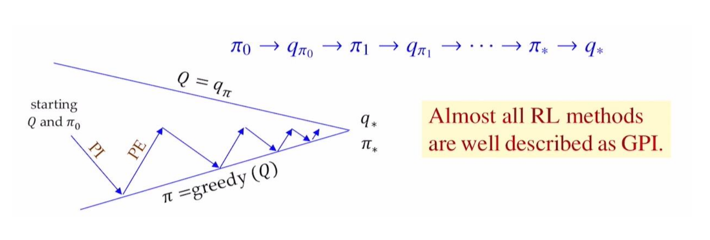

Reinforcement Learning 2
Dynamic Programming
Method for solving Markov Decision Processes (MDPs)
- DP assumes
- Model-based
- The Markov property
- DP uses the Bellman equation to iteratively update value functions.
- Goal
- Compute the optimal value function
- Derive the optimal policy
Two main approach
- Value-based approach
- Directly update value functions
- Leads to Value Iteration
- Policy-based approach
- Evaluate and improve policies
- Leads to Policy Iteration
Value Iteration
Bellman Optimality Equation \[v_*(s) = \max\limits_a\sum\limits_{s',r}p(s',r|s,a)[r+\gamma v_*(s')]\]
Value Iteration Procedure
\[V_{k+1}(s)\leftarrow\max\limits_a\sum\limits_{s',r} p(s',r|s,a)[r+\gamma V_k(s')]\]
Initialize \(\rightarrow\) Update \(\rightarrow\) Compute the Optimal Policy
Disadvantages 1. Policy often converges long before the values converge: values rarely changes 2. Slow: \(O(S^2A)\) per iteration and needs many iterations to converge.
Convergence - \(\epsilon: \lvert V_{k+1}(s) - V_{k}(s) \rvert < \epsilon\) for all \(s\)
Value Iteration Pseudo Code
Policy Iteration
Policy Iteration Procedure
- Policy Evaluation
- Compute \(V^\pi\) from the deterministic policy \(\pi\)
- \[V_{k+1}(s)\leftarrow\sum\limits_{s',r} p(s',r|s,\pi(s)) [r+\gamma V_k(s')]\]
- Initialize \(V_0(s)=0\) for all states \(s\).
- Update \(V_{k+1}(s)\) from all \(V_k(s')\) (full backup) \(\rightarrow\) until convergence to \(V^\pi(s)\)
- Policy Improvement
- Improve policy \(\pi\) to \(\pi'\) using a greedy policy based on \(V^\pi\)
- \[\pi'(s) = \arg\max\limits_a\sum\limits_{s',r} p(s',r|s,a) [r+\gamma V^\pi(s')] = \arg\max\limits_a Q^\pi(s,a)\]
Value vs Policy Iteration
- In Value Iteration, \(\pi_*\) is computed at the end using \(V^*\).
- In Policy Iteration, improvement is done at every step.
Comparison to Value Iteration - Fewer iterations are needed to reach the optimal policy. - Faster convergence because the value update is based on a fixed policy.
- Since \(Q^\pi(s,\pi'(s))\ge V^\pi(s) = \sum\limits_a\pi(a|s) Q^\pi(s,a)\), always either
- \(\pi'\) is strictly better than \(\pi\), or
- \(\pi'\) is optimal when \(\pi=\pi'\)
\(\Rightarrow\) Policy Improvement Theorem
Policy Improvement
Let \(\pi\) and \(\pi'\) be two policies.
If \(Q^\pi(s,\pi'(s))\ge V^\pi(s)\) for all \(s\in S\), \(V^{\pi'}(s)\ge V^\pi(s)\) for all \(s\in S\).
This implies that \(\pi'\) is better policy than \(\pi\).
\[ \begin{aligned} v_\pi(s) &\le q_\pi(s,\pi'(s))\\ &=\mathbb{E}[R_{t+1}+\gamma v_\pi(S_{t+1})|S_t=s,A_t=\pi'(s)]\\ &=\mathbb{E}_{\pi'}[R_{t+1}+\gamma v_\pi(S_{t+1})|S_t=s]\\ &\le\mathbb{E}_{\pi'}[R_{t+1}+\gamma q_\pi(S_{t+1},\pi'(S_{t+1}))|S_t=s]\\ &=\mathbb{E}_{\pi'}[R_{t+1}+\gamma \mathbb{E}_{\pi'}[R_{t+2}+\gamma v_{\pi}(S_{t+2})|S_{t+1}, A_{t+1}=\pi'(S_{t+1})]|S_t=s]\\ &=\mathbb{E}_{\pi'}[R_{t+1}+\gamma R_{t+2}+\gamma^2v_\pi(S_{t+2})|S_t=s]\\ &\ \ \vdots\\ &\le\mathbb{E}_{\pi'}[R_{t+1}+\gamma R_{t+2}+\gamma^2 R_{t+3}+\cdots|S_t=s]\\ &=v_{\pi'}(s) \end{aligned} \]
Policy Iteration
\[\pi_0 \rightarrow \text{policy evaluation} \rightarrow V^{\pi_0} \rightarrow \text{policy improvement} \rightarrow \pi_1 \rightarrow \cdots \rightarrow \pi_* \rightarrow V^*\] - A finite MDP has finitely many policies, so this process converges to an optimal policy and an optimal value function in finite iterations. - If \(\pi'\) is as good as, but not better than \(\pi\), then \(v_\pi=v_{\pi'}\) and satisfies Bellman optimality equation - \[v_{\pi'}(s)=\max\limits_a\sum\limits_{s',r}p(s',r|s,a) [r+\gamma v_{\pi'}(s')]\] - Thus, \(\pi'\) is optimal.
Pseudo Code
Summary
Finding an optimal policy by solving Bellman optimality equation requires
- Markov property
- Accurate knowledge of environment dynamics (known MDP)
- Enough space and time to do the computation
Dynamic Programming
- Under model-based, each iteration updates every value function in the table using full backup \(\rightarrow\) effective for medium-sized problems
- Usually evaluate \(V(s)\) instead of \(Q(s,a)\) because \(|s| \ll |(s,a)|\)
- For large problems, DP suffers from the curse of dimensionality:
- The number of states grows exponentially with the number of state variables
Reinforcement Learning
Reinforcement Learning
DP vs RL
- Dynamic Programming (DP)
Planning under model-based setting using full-backup.
Each iteration updates every value in the table using full backup.
Usually, evaluate \(V(s)\) rather than \(Q(s,a)\).
Greedy policy improvement over \(V(s)\) requires known MDP.
- \[\pi_*(s) = \arg\max\limits_a\sum_{s',r} p(s',r | s,a) [r + \gamma V^*(s')]\]
- Reinforcement Learning (RL)
Learning under model-free setting using sample backup, and approximately solving the Bellman optimality equation.
Monte Carlo (MC) method
Temporal Difference (TD) learnings
- Sarsa
- Q-learning
Each iteration updates some values in the table from sampl backup.
We evaluate \(Q(s,a)\) instead of \(V(s)\).
Greedy policy improvement over \(Q(s,a)\) works for model-free settings:
- \[\pi'(s)=\arg\max\limits_a Q^{\pi}(s,a)\]
Generalized Policy Iteration (GPI)
- Policy Evaluation makes the vlaue function “consistent with the current policy”
- Policy Improvement makes the policy “greedy w.r.t. the current value function”

Monte Carlo Methods
Monte Carlo (MC)
Repeated random sampling to compute numerical results
Tabular updating and model-free method.
MC Policy Iteration adapts GPI based on episode-by-episode of PE estimating \(Q(s,a)=q_\pi(s,a)\) and e-greedy PI.
MC learns from entire trajectory fo sampled episodes, updating after every single episode using real experience.
\[\text{Value} = \text{average of returns } G_t \text{of sampled episodes}\]
- MC focuses on a small subset of the states.
- 이 방법은 ’Successor value estimates’에 의존하지 않기 때문에 Markov property 위반으로 인한 피해가 적다.
\[\Rightarrow\text{No bootstrapping}\]
MC Prediction (Policy Evaluation)
Goal: learn \(q_\pi\) from enitre episodes of real experience under policy \(\pi\).
MC Policy Evaluation uses empirical mean return instead of expected return.
To estimate \(q_\pi(s,a)\)
- For each time step \(t\) when state \(s\) is visited and action \(a\) is taken:
- Increment count: \(n(s,a) \gets n(s,a) + 1\)
- Increment total return: \(S(s,a) \gets S(s,a) + G_t\)
- Estimate mean return: \(Q(s,a) = S(s,a) / n(s,a)\)
- For each time step \(t\) when state \(s\) is visited and action \(a\) is taken:
As \(n(s,a) \to \infty\), \(Q(s,a) \to q_\pi(s,a)\)
Incremental MC updates
- Incremental Mean
- Partial mean \(\mu_k\) of sequence \(x_1, x_2, \ldots\) is computed incrementally \[\mu_k = \frac{1}{k}\sum_{i=1}^k x_i = \mu_{k-1} + \frac{1}{k}(x_k - \mu_{k-1})\]
- Incremental Monte Carlo Updates
- Increment count: \(n(S_t, A_t) \gets n(S_t, A_t) + 1\)
- Update rule: \(Q(S_t, A_t) \gets Q(S_t, A_t) + \frac{1}{n(S_t, A_t)} [G_t - Q(S_t, A_t)]\)
constant \(\alpha\) MC Policy Evaluation
In practice, a step-size \(\alpha\) is used \[Q(S_t, A_t) \gets Q(S_t, A_t) + \alpha [G_t - Q(S_t, A_t)]\]
Old episodes are exponentially forgotten due to the \((1-\alpha)Q(S_t, A_t)\) term.
Exploitation vs Exploration
- Exploitation: making the best decision by using already known information
- By selecting the action with the highest Q-value while sampling new episodes, we can refine our policy efficiently from an alreadly promising region in the state-action space.
- Exploration: searching for new decisions by gathering more information
- By selecting an extra random action while \(\epsilon\)-probability while sampling new episodes, we can find a new and maybe more promising region within the state-action space.
- To trade-off Exploitation and Exploration, use \(\epsilon\)-greedy policy.
MC Control (\(\epsilon\)-Greedy Policy Improvement)
Choose the greedy action with probability \(1-\epsilon\) and a random action with probability \(\epsilon\). \[\epsilon/m \text{ for each of all } m \text{ actions } \Rightarrow \text{stochastic policy}\]
All actions are selected with non-zero probability for ensuring continual exploration. \[\pi'(a|s) = \begin{cases}1 - \epsilon + \epsilon/m & \text{if } a=\arg\max_{a'}Q^\pi(s,a') \\ \epsilon/m & \text{otherwise } (m-1 \text{actions})\end{cases}\]
In full backup DP, Policy Improvement uses \[\pi'(s) = \arg\max_{a} Q^\pi(s,a) \Rightarrow \text{deterministic policy}\]
For any \(\epsilon\)-greedy policy \(\pi\), \(\epsilon\)-greedy policy \(\pi'\) with respect to \(q_\pi\) is always improved: \(v_{\pi'}\ge v_\pi(s)\)
Greedy in Limit with Infinite Exploration (GLIE)
All state-action pairs \((s,a)\) are explored infinitely many times: \[\lim\limits_{k\to\infty}n_k(s,a)=\infty\]
The learning policy converges to a greedy policy: \[\lim\limits_{k\to\infty}\pi_k(a|s) = 1 \text{ where } a = \arg\max\limits_{a'}Q_k(s,a')\]
GLIE MC Control: \(\epsilon\)-greedy is GLIE if \(\epsilon_k\to 0\) as follows:
In the \(k\)-th episode using policy \(\pi\), for each state-action pair \((S_t,A_t)\): \[n(S_t, A_t) \gets n(S_t, A_t) + 1Q(S_t, A_t) \gets Q(S_t, A_t) + \frac{1}{n(S_t, A_t)} [G_t - Q(S_t, A_t)]\]
Improve policy based on the new action-value function: \(\epsilon=1/k,\pi\gets\epsilon\text{-greedy}(Q)\)
GLIE MC Control converges to the optimal: \(Q(s,a)\to q_*(s,a)\)